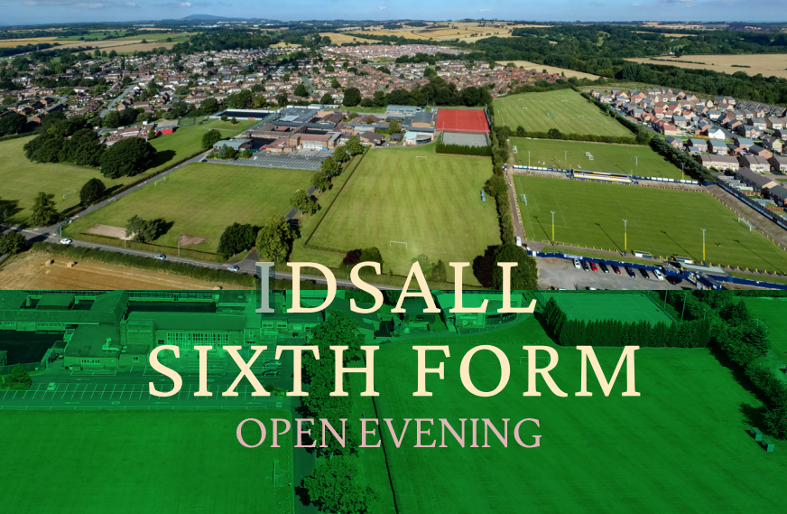

E Glandibus Quercus

Idsall School is a popular, oversubscribed school
that believes every student can reach their potential.
By constantly thriving to offer the highest of
standards,
we value each and every one of our
students
and they are always at the very centre of
what we do.
By recognising their unique needs and aspirations,
providing equal opportunities and a safe caring
environment,
our students are able to flourish and achieve
their
best in everything they do.
Students can take a wide
range of subjects at both A Level and GCSE, as
well as a suite of vocational
qualifications, which
are well
supported by our busy and successful
extra-curricular activities and
extended opportunities.
Idsall is an exciting place to learn, work and grow.
Building on our many strengths, we will ensure the
seven-year journey rewards all academically, as well
as developing the many other skills that will help
each
and every one of our students to become
great citizens
and highly successful in life.